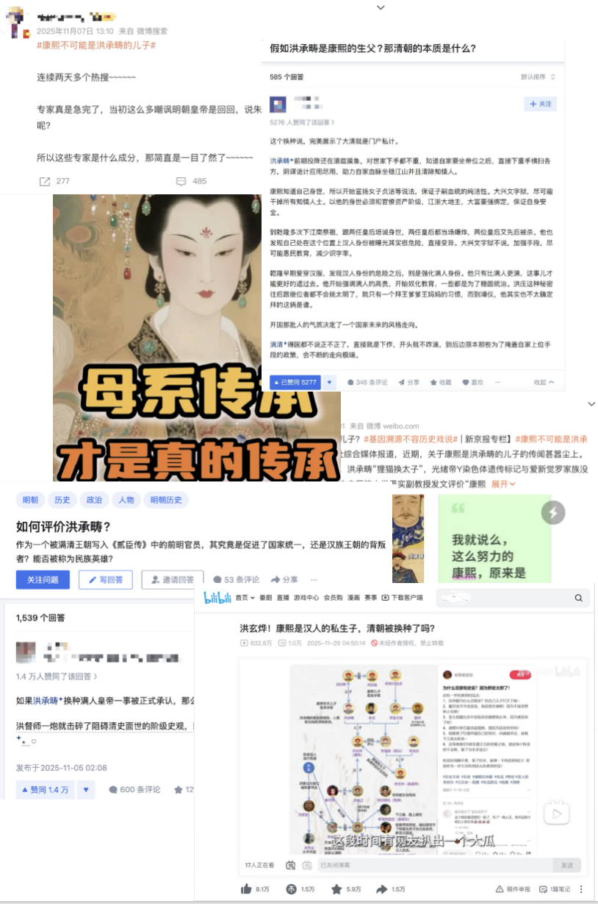
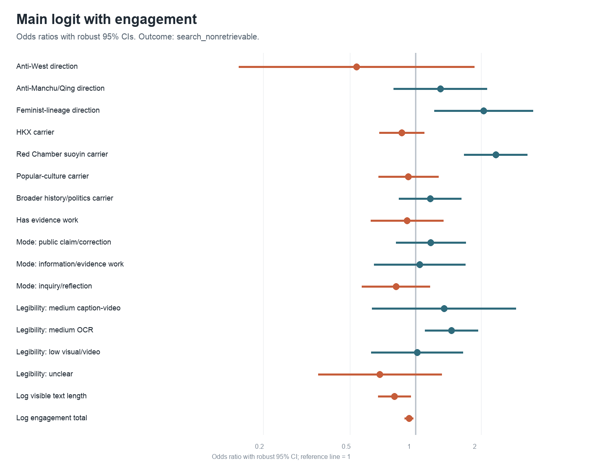
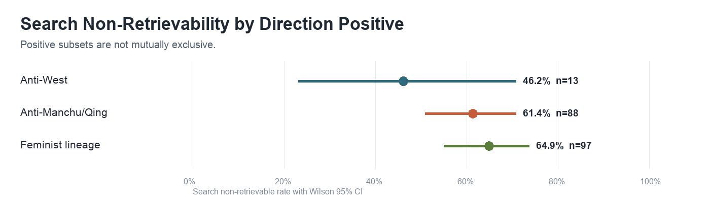
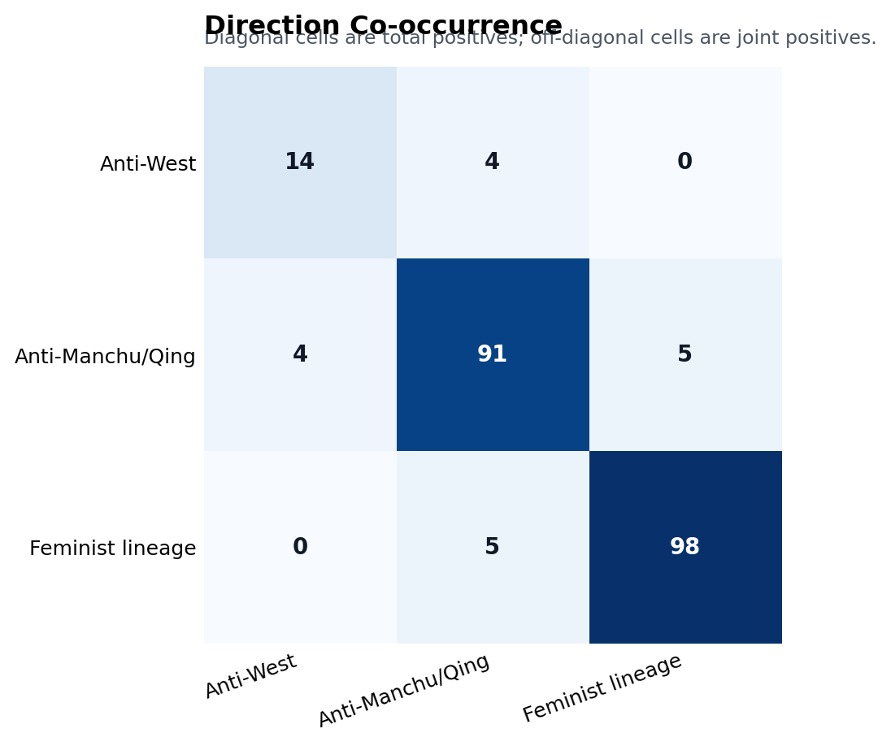

Research Question
Within the same Hong-Kangxi event corpus on Xiaohongshu (小红书), which post features are associated with reduced public-search visibility?
In November 2025, a rumor spread across the Chinese internet claiming that the Kangxi Emperor was the secret son of Empress Dowager Xiaozhuang and Hong Chengchou, a Ming general who surrendered to the Qing. The historical claim itself is not the object of this study. What matters is that the rumor reactivated several politically meaningful ways of narrating Chinese nationhood: anti-Manchu/Qing rupture narratives that challenge the state’s multi-ethnic unity framework, anti-Western pseudo-history claims that center the 1644 transition as a civilizational break, and feminist-lineage critiques that challenge patrilineal assumptions about national continuity. These directions touch different premises in the state-led national story.
Chinese information control is known to be strategic, delegated, and frictional rather than reducible to universal deletion. The missing piece is intra-domain variation: within the same event corpus, which post features are associated with reduced public-search visibility? I chose Xiaohongshu as the specific research platform and answer three operational questions. RQ1 asks what the corpus looks like by rhetorical mode, narrative direction, carrier material, and platform legibility. RQ2 tests whether anti-Manchu/Qing, anti-Western, and feminist-lineage directions differ in visibility friction. RQ3 tests whether mode, carrier, or legibility help explain visibility beyond direction alone.
Course project for POLSCI 541 (Practical Data Science II), Duke University. Advisor: Nick Eubank.
The Discourse: What Gathered Around the Rumor

Anonymized posts from the November 2025 wave across Xiaohongshu, Zhihu, Bilibili, and Weibo; the discourse spread across platforms. Author avatars and IDs have been redacted.
What makes the wave analytically interesting is not the rumor itself but what gathered around it. Participants visibly shared a stock of narrative material (Hong Chengchou, Xiaozhuang, the year 1644, the imperial portraits, the broken patriline) but did not share a single discourse system or value framework. Several distinct schools of interpretation crystallized inside the same discourse stream, each with its own internal logic and its own relation to the larger Mourning Ming complex. The most prominent are:
- the race-swap school (换种)
- the xianghuo / Han victory school (香火)
- the feminist interpretation
- the Red Chamber suoyin school (新新索隐派)
- the Western pseudo-history school (西方伪史论)
- the fan-circle idiom (饭圈)
- the “melon-eating” / fun-seeking register (吃瓜 / 乐子人)
The race-swap school (换种)
This school reads the rumor as the literal substitution of one bloodline for another. Its key claim is that the Manchu imperial line was secretly broken and replaced by a Han line, so that the later Qing emperors (Kangxi, Qianlong, and their heirs) were “actually” Han. Within this school, the discovery is told as a kind of belated Han victory: even when the Manchus appeared to be ruling China, the line that “really” continued was Han.
The xianghuo / Han victory school (香火)
This school overlaps with the race-swap school but foregrounds the kinship vocabulary explicitly. Its central terms are xianghuo (香火, the patrilineal “incense and fire” of ancestral continuity), duanle (断了, “broken“), and “blood.” On its own framing, the Qing patriline was severed, and the line that subsequently continued was actually Han blood, a claim celebrated as a covert Han triumph over the conquerors.
Xianghuo (literally “incense and fire”) refers to the ritual continuation of the patriline through male descent. In the dominant Confucian-Han kinship logic, a child is conceptually the product of the father, and the mother’s body is a vessel through which the patrilineal line passes. To “extinguish a family’s xianghuo” (绝香火) means to end the chain of male heirs who can perform ancestral rites, and it is treated as a grave failure. Scholarship on Chinese gender and nationhood has shown that this patrilineal logic is not a residual folk belief but an active organizing principle of family law, ancestral hall practice, and the state’s family-as-state analogy.1
The Hong-Kangxi discourse appears, on its surface, to attack Manchu rule. But the categories it deploys (the Qing patriline was broken, the xianghuo was severed, the line that actually continued was Han blood) are themselves patrilineal categories. They treat the child as a product of the father, treat male blood as the substance of historical continuity, and read the entire dynastic story through whose semen entered which womb. Even the celebration of the discovered “Han line” reaffirms the framework that sons belong to fathers and that fathers transmit identity. The framework subverts Qing legitimacy and reinforces patriarchal premises in a single operation.
The feminist interpretation
The feminist direction appropriates the discourse’s premise about broken civilizational continuity and turns it back on the patrilineal scaffolding. If patrilineal descent is in principle unverifiable, as the rumor itself dramatizes, then the entire architecture of patrilineal civilizational continuity collapses, and matrilineal descent becomes the only stable form of transmission. The best-known slogan circulating within this strand compresses the argument into four clauses, each inverting a patrilineal trope: ancestral halls as “imagined wombs,” genealogies as “virtual umbilical cords,” history as “a little boy passed around for adoption,” and “the matriline is the dragon-vein that cannot be cut.”2 The redirection does not merely add a feminist gloss. It uses the discourse’s own materials to reverse the gender of national continuity itself. This direction is particularly prominent on Xiaohongshu, a platform whose user base skews female, and, as the Findings section shows, it is the direction most robustly associated with reduced search visibility.
The Red Chamber suoyin school (新新索隐派)
This school reads Dream of the Red Chamber as an encrypted Ming-mourning text and folds it into the Hong-Kangxi universe. Earlier waves of Red Chamber suoyin (indexicalist reading) had already proposed that the novel encodes the fall of the Ming. The new wave goes further, treating the novel as also encoding the secret that Kangxi was a Han impostor, and reading characters, dates, and plot turns as ciphered evidence for the broader conspiracy.
The Western pseudo-history school (西方伪史论)
This school extends the same suspicious-reading method outward. It argues that Western civilization’s claimed historical depth is largely fabricated, that key Chinese inventions and texts (the canonical example being the Yongle Encyclopedia) were stolen by Western powers, and that the apparent supremacy of Western science and technology rests on appropriated Chinese material. Within Mourning Ming, this school supplies the outward-facing complement to the inward-facing race-swap school: the Ming was destroyed from within by the Manchus and looted from without by the West.
The fan-circle idiom (饭圈)
This register imports the affective vocabulary of online idol fandom into Ming-mourning. The Chongzhen Emperor (the last Ming ruler, who hanged himself in 1644) is rendered as “Jianjian“ (检检), assigned a “tragic-beautiful“ persona, and “mo”-ed (嬷, a fandom verb expressing protective pity for a fragile, romanticized object). The historical figure is processed through the same emotional grammar that fans apply to fictional or celebrity love objects.
The “melon-eating” and meme registers
Chigua (吃瓜, “eating melon“) is a Chinese internet term for a spectatorial posture that consumes gossip and controversy as entertainment without taking a stance, a kind of tabloid-style rubbernecking. Markers such as 吃瓜, 笑死 (“dying of laughter”), 抽象 (“absurdist”), 乐子人 (“fun-seeker”), 谁懂 (“who gets it”), and 离谱 (“outrageous”) appear often, and the underlying posture of treating the whole event as entertainment extends well beyond these specific markers. The term 抽象 is worth flagging: in contemporary Xiaohongshu youth culture it does not mean “abstract” in the philosophical sense but refers to a deliberately nonsensical, absurdist aesthetic, content that is funny precisely because it refuses to make sense. This ironic posture makes position inference harder. Serious political content is routinely packaged in entertainment framing, and “fun-seeker” self-labeling can be either a sincere claim to non-seriousness or a protective mask for political expression. The two are hard to distinguish reliably.
Anti-Manchu Symbolism: Historical Background
The anti-Manchu symbolism that resurfaces in contemporary “Mourning Ming” discourse is not a spontaneous product of the 2025 internet. It draws on a racialized discursive repertoire whose decisive formation occurred in the late Qing revolutionary period (roughly 1900 to 1911) and whose components have remained available, though officially suppressed, ever since.
Two converging sources. Late Qing anti-Manchuism fused two distinct intellectual resources. The first was the classical Hua-Yi distinction (华夷之辩), a civilizational hierarchy separating the “civilized” Hua from the “barbarian“ Yi. Frank Dikötter has argued that this distinction was never purely culturalist: classical texts already attributed somatic and quasi-biological characteristics to the Yi, constituting a proto-racial hierarchy rather than a fully open assimilationist order.3 The second source was the modern concept of race, transmitted via Japan and the West through figures such as Yan Fu and Liang Qichao. The late Qing transformation, on Dikötter’s account, was therefore not the importation of an entirely foreign idea but the reactivation and recoding of a pre-existing classificatory logic: the culturally defined Yi was re-inscribed as a biologically inferior race, converting a potentially erasable cultural difference into an ostensibly immutable difference of blood.4
The revolutionary indictment. Edward Rhoads has systematized the anti-Manchu critique advanced by revolutionaries such as Zou Rong, Chen Tianhua, and Zhang Binglin into a “seven-point indictment”: that the Manchus were an alien people not belonging to China; that they had committed atrocities during the conquest; that they had “barbarized” the Han through forced changes of hairstyle and dress; that they constituted a segregated privileged stratum; that they ruled by military occupation; that they discriminated against the Han politically; and that they were fundamentally hostile to the Han.5 Zou Rong’s The Revolutionary Army (1903) exemplifies the racialized register, while Zhang Binglin supplied a learned genealogy tracing the Han to the mythic Yellow Emperor and figuring the Manchus as foreign oppressors, from which the slogans “expel the Manchus” (paiman) and “restore Han sovereignty” emerged.6
Crucially, Rhoads demonstrates that this indictment was not merely rhetorical fabrication. Against Mary Wright’s thesis that Manchu-Han assimilation had effectively been completed by the 1860s, Rhoads shows that systematic differences in administrative jurisdiction, residential segregation (the Manchu garrison cities), legal treatment, marriage prohibitions, and hereditary banner status persisted until the eve of the 1911 Revolution.7 The mobilizing power of the revolutionary indictment rested in part on this institutional reality.
Sun Yat-sen’s pivot. The most consequential moment for understanding the official “bottom line” that this discourse now collides with is Sun Yat-sen’s reversal. Sun’s early Tongmenghui program (“expel the Tartar barbarians, restore China,” 驱除鞑虏，恢复中华) was a militant ethnonationalism of exclusion. Yet almost immediately after the 1911 Revolution, Sun pivoted to the “republic of five races” (wuzu gonghe: Han, Manchu, Mongol, Hui, Tibetan). Suisheng Zhao reads this pivot as instrumentally driven by territorial logic rather than ethnic reconciliation: a consistent anti-Manchu program would have entailed surrendering more than half of the Qing imperial territory (Manchuria, Mongolia, the Muslim northwest, Tibet) and confining the new republic to the eighteen Han provinces. To inherit the Qing territorial estate, the anti-Manchu program had to be “transcended.”8
Violence and suppression, not disappearance. Anti-Manchu discourse had material consequences: Rhoads documents large-scale violence against bannermen during the revolution, in Xi’an, Nanjing, Fuzhou, and Jingzhou, where Manchus attempting to pass as Han were identified by residence, accent, dress, and women’s unbound feet. This revises the conventional narrative of a “bloodless” revolution and shows that identifiable markers of difference survived two centuries of acculturation.9 After 1911, ethnonationalist anti-Manchuism was first “transcended” by Sun and then, after 1949, further suppressed by the CPC (Communist Party of China) “unified multi-ethnic state” doctrine, which reframed the 1644 conquest as an internal dynastic transition rather than an external civilizational rupture.10 As Zhao and others stress, this repertoire was suppressed rather than eliminated; it remained latent and available for reactivation under appropriate conditions.11
This is the analytic anchor of the present study: contemporary “Mourning Ming” discourse, by pushing the origin of “humiliation“ back from 1840 to 1644 and redefining the conquest as civilizational destruction, reactivates a century-old repertoire and directly contests the official bottom line.
Online Historiographic Registers
The “impossible triangle”: three historiographic views
Chinese internet discourse on the Ming/Qing transition is organized around three historiographic frameworks that pull in incompatible directions:
- Class-based view (阶级史观): reads 1644 through the lens of class contradiction. The Manchu conquest is subordinated to the story of feudal landlord exploitation of peasants. This is the orthodox Marxist historiographic position.
- Ethnonationalist view (民族史观): reads 1644 as an ethnic conquest. The Manchu/Han distinction is primary, and the Qing period is a foreign occupation.
- Unity view (团结史观, the current official preference): reads 1644 as an internal dynastic transition within a continuously unified multi-ethnic state. The Qing “belongs” to Chinese history, and the conquest was not a rupture.
These three views are sometimes called an “impossible triangle” (不可能三角) online because their judgments of 1644 and of Manchu rule pull against each other: the class view and the unity view can coexist (class struggle within a unified polity) but cannot accommodate the ethnonationalist insistence on conquest; the ethnonationalist view and the class view can coexist (a foreign ruling class exploiting domestic peasants) but disrupt unity; and so on.
What gave the Hong-Kangxi rumor its viral reach is that the same claim could satisfy all three frameworks at once. Ethnonationalists read it as the Han bloodline covertly reclaiming the throne. Unity advocates read it as proof that Manchu and Han had already mixed, dissolving the ethnic boundary into an internal Han affair. Class-based readers could reframe it as one Han landlord-official’s family replacing another. Even the feminist direction could use the same material for opposite purposes. The rumor functioned as a Rorschach test: each school projected its own framework onto the same story and found confirmation.
Tongsantong and gouzi shiguan: mock-academic parody
The phrase tongsantong (通三统, “linking the three traditions”) borrows from a serious political-theory concept (Gan Yang’s proposal for synthesizing Confucian, Maoist, and liberal traditions in post-reform China) and repurposes it as a joke: the Hong-Kangxi rumor supposedly “reconciles” the three historiographic views in one stroke. This is deliberate mock-academic parody, using scholarly framing to package a punchline. It shares a rhetorical mechanism with the next term.
Gouzi shiguan (钩子史观) is a coined pseudo-historiographic term. Its origin is a viral post explaining Zhu Yuanzhang’s (the Ming founder’s) character through an episode of transactional sexual exchange, using the crude term mai gouzi (卖沟子). The word gouzi came to denote the salacious, bodily “hook” in the narrative. Gouzi shiguan imitates the naming convention of legitimate historiographic positions (class-based view, ethnonationalist view) to label a “view” that reduces every historical figure or event to sexual or bodily motivation.
Its target is not historical fact but the sacralized narratives that dynasty enthusiasts (Ming loyalists, Qing apologists) build around idealized emperors. By pulling emperors and generals into the register of the body and of sex, it performs what Bakhtin called carnivalistic degradation: the official, the elevated, and the sacred are brought down to the material-bodily level and stripped of their authority. The vocabulary of this register is deliberately crude; euphemistic character substitutions (such as using 壬 for other terms) are common strategies for evading platform keyword filters, and the evasion itself is part of the performative style.
1 On patrilineal logic as an active principle of family law, ancestral practice, and the state’s family-as-state analogy, see Leta Hong Fincher, Betraying Big Brother: The Feminist Awakening in China (London: Verso, 2018), esp. chap. 7; and Wang Zheng, Finding Women in the State: A Socialist Feminist Revolution in the People’s Republic of China, 1949–1964 (Oakland: University of California Press, 2017).
2 The most circulated feminist response within the discourse reads: 祠堂是臆想的子宫，族谱是虚拟的脐带，历史是任人抱养的小男孩，母系是斩不断的龙脉. Each clause inverts a load-bearing patrilineal trope. “Ancestral halls” and “genealogies,” the architectural and textual infrastructure of the patriline, are recoded as appropriations of the female reproductive body that the patriline cannot itself produce. “History is a little boy passed around for adoption“ rewrites the well-known Chinese saying that “history is a little girl whom anyone can dress up” (历史是任人打扮的小姑娘), a popular shorthand for the constructedness of historical narrative. The original saying takes the constructedness of history for granted but encodes the constructed object as a passive, dressable female. The slogan keeps the constructedness but flips the gender: now it is the male heir, the carrier of the patriline, who is the passive object of others’ arrangements. “Adoption“ (抱养) is a particularly pointed verb, because the central anxiety the Hong-Kangxi discourse activates is precisely whether the imperial line was secretly adopted in. Finally, “the matriline is the dragon-vein that cannot be cut” appropriates one of the most heavily masculinized Chinese metaphors for sovereign continuity, the long mai (龙脉, the dragon vein that runs through emperors), and reattaches it to matrilineal descent on the empirical ground that maternity, unlike paternity, is verifiable.
3 Frank Dikötter, The Discourse of Race in Modern China, 2nd expanded ed. (London: Hurst, 2015), chap. 1. First published 1992 by Stanford University Press.
4 Dikötter, Discourse of Race, chap. 2.
5 Edward J. M. Rhoads, Manchus and Han: Ethnic Relations and Political Power in Late Qing and Early Republican China, 1861–1928 (Seattle: University of Washington Press, 2000), 11–17.
6 Rhoads, Manchus and Han, 1–17; Dikötter, Discourse of Race, chap. 2.
7 Rhoads, Manchus and Han, 34–69.
8 Suisheng Zhao, A Nation-State by Construction: Dynamics of Modern Chinese Nationalism (Stanford: Stanford University Press, 2004), chap. 2.
9 Rhoads, Manchus and Han, 195–210.
10 Zhao, A Nation-State by Construction, chaps. 2, 5.
11 Zhao, A Nation-State by Construction, chap. 5; Kevin Carrico, The Great Han: Race, Nationalism, and Tradition in China Today (Oakland: University of California Press, 2017), 131–158.
Research Journey
The dependent variable comes first: from “deletion“ to “visibility friction“
Before the codebook was designed, a 100-post manual audit of posts flagged as likely deleted produced a finding that reshaped the entire project. Of those 100 posts, 32 were confirmed gone from identifiable author profiles (hard deletion). But 27 were still present on the author’s profile page, fully viewable, yet invisible through public search. The remaining 41 could not be verified because the author could not be identified.
This meant that roughly 27% of “deleted” posts were not deleted at all. They were shadow-banned from search, or deprioritized by the search algorithm, or subject to some other form of reduced discoverability. Calling the outcome “deletion“ would be inaccurate. Following Roberts (2018), the outcome was reconceptualized as visibility friction: the dependent variable became search_nonretrievable (whether a post collected in November 2025 could still be found via public Xiaohongshu search in April 2026), and the project framing shifted from “did the platform delete certain posts?” to “within this event, does search-visibility friction track narrative direction, carrier material, or platform legibility?”
This was not a late correction. It happened during the earliest phase of data exploration (P1), before the first codebook draft was complete, and it remained the project’s framing throughout.
The codebook: a full lineage abandoned, then rebuilt from scratch
The first codebook lineage (v1 through v2-Alpha.2) used a single-pass mode-plus-topic architecture. Mode categories covered rhetorical action (claim, evidence work, inquiry, spectating), and topic categories covered both narrative direction (anti-Manchu, anti-Western, feminist) and carrier material (Hong-Kangxi genealogy, Red Chamber) in the same list. Close reading of the first 350 posts revealed that this design did not survive contact with the data: strict “Mourning Ming” posts were a minority, meme and gossip posts dominated roughly 40% of the corpus, categories were rarely clean (a single post could simultaneously do gossip spectating, Red Chamber interpretation, and feminist critique), and median post length was only 160 characters.
The lineage was iteratively patched (adding scope, refining tag-vs-content rules, splitting tone from topic). After each patch, a smoke test or small reliability exercise would surface new problems. The decisive failure came in a 96-post reliability test (analytic n = 89): the T3 field (Hong-Kangxi genealogy) reached a human-LLM kappa of only 0.38.
The diagnosis was not a simple codebook bug. The primary coder had implicitly treated event relevance as requiring a topic label, placing vague event-evocation posts into T3, while the LLMs read the codebook literally and left topics empty when no Hong-Kangxi paternity material was textually present. This was human coder drift, and it surfaced a deeper architectural problem: the topic field was being asked to do three different jobs at once (narrative direction, carrier material, and residual context). The entire first lineage was abandoned rather than patched again.
Advisor guidance and the second lineage
A meeting with advisor Nick Eubank reoriented the methodology. Several of his points directly shaped the replacement design: 0.4 is not a magic kappa threshold, just as 0.05 is not a magic p-value; the human-human benchmark is the ceiling for LLM performance, so a second human coder (H2) must be introduced; development data can be revisited and codebooks revised on it, as long as a separate held-out sample is reserved for final validation; and low-frequency but theory-bearing categories (such as anti-Western with only 14 positive cases) must be retained, not dropped for statistical convenience.
The replacement codebook (v3 through v3.3-final) was built around four design constraints derived from the failure: (1) separate rhetorical action from theory-bearing content from cultural carrier, using a two-pass coding architecture; (2) treat empty-state for both direction and carrier as a valid label, not a missing one; (3) reduce substantive mode categories from six to four to lower boundary load on coders; and (4) derive style flags (such as playful lexical markers) by deterministic script rather than subjective coding. Three calibration rounds on disjoint development samples (n = 57, 76, and 49) refined the instrument before it was frozen as v3.3-final and tested on a 240-post held-out reliability sample.
Data & Methods
Corpus
The raw November 2025 crawl collected 2,797 posts from Xiaohongshu using three keyword searches: 康熙瓜 (Kangxi gossip), 洪承畴 (Hong Chengchou), and 伪史 (pseudo-history). After removing 107 unrelated keyword-noise posts, the cleaned corpus contained 2,690 rows: 1,594 Hong-Kangxi event posts (the analytic corpus), 593 standalone Western pseudo-history posts, and 503 pure historical analysis posts. Each record includes title, caption/body text, OCR-extracted image text, post type, keyword source, engagement metadata, posting date, and an April 2026 search-verification status.
Dependent variable
search_nonretrievable: whether a post collected in November 2025 could still be found via public Xiaohongshu search in April 2026. Verification used a Playwright-based script that searched the first 20 characters of each post’s title and checked whether the post’s unique ID appeared in the rendered results. Direct URL checks were not possible because Xiaohongshu uses expiring security tokens. The outcome is interpreted as public-search visibility friction, not confirmed deletion or censor intent.
Coding architecture
The v3.3-final codebook uses a two-pass system. Pass 1 classifies rhetorical mode (public_claim_or_correction, information_or_evidence_work, inquiry_or_reflection, playful_spectatorship) and evidence work. Pass 2 classifies content: three direction dummies (anti-Western, anti-Manchu/Qing, feminist-lineage) and four carrier dummies (Hong-Kangxi material, Red Chamber suoyin, popular-culture intertext, broader history/politics). Platform legibility is script-derived from post type, text length, OCR text, and video-observability flags.
LLM-assisted coding and reliability
Production labels used a mixed human-LLM strategy. Five LLMs were deployed: Claude Sonnet 4.6, DeepSeek V3.2, and GPT-5.4 (current set), plus Claude Opus 4.7 and DeepSeek V4 Pro Thinking (robust set for reliability testing). Of the 1,594 event posts, 623 high-risk posts (any direction positive, any mode disagreement) were human-adjudicated with field-by-field final labels. The remaining 971 used LLM-consensus labels under strict rules: direction was set to negative only when both LLMs agreed negative.
Held-out reliability was tested on a 240-post sample (160 fresh random + 80 keyword-enriched boundary supplement) coded by two human coders and five LLMs. Key human-human benchmarks: direction_status kappa = 0.737, mode kappa = 0.677, carrier macro kappa = 0.625. The H1-H2 benchmark is the ceiling, not a ground truth: it estimates how reproducible the codebook is when applied by trained coders.
Statistical model
The main model is a descriptive logistic regression predicting search_nonretrievable from direction dummies, mode, carrier, evidence work, platform legibility, post type, posting date, keyword fixed effects, log visible-text length, and log engagement. Robust standard errors. N = 1,463 after excluding verification errors and mode/content-uncodable posts. Engagement is included with caution: it may partly reflect earlier visibility or ranking rather than serving as a clean pre-treatment control. Models with and without engagement, and with low-engagement exclusions, are reported as sensitivity checks.
Findings
Most event participation is not theory-bearing
The event corpus is not dominated by overt political claims. Public claim/correction is the largest mode (609 posts, 38.2%), but playful spectatorship is also large (441, 27.7%). Information/evidence work and inquiry/reflection account for 238 (14.9%) and 225 (14.1%). Direction is rarer than event participation: only 91 posts carry anti-Manchu/Qing labels (5.7%), 14 carry anti-Western labels (0.9%), and 98 carry feminist-lineage labels (6.1%). Most posts participate in the Hong-Kangxi event without advancing any of the three theory-bearing directions.
Adjusted associations: feminist-lineage, Red Chamber, and the counterintuitive pattern
After adjusting for mode, carrier, legibility, post type, date, text length, and engagement (N = 1,463):
Feminist-lineage direction is the only theory-bearing direction that remains clearly associated with higher search non-retrievability in the main model and across sensitivity checks. Posts carrying this direction are 16.4 percentage points more likely to be search-nonretrievable (OR = 2.06, 95% CI [1.22, 3.46]). This is the first time the gender dimension surfaced as an empirical finding in my research. I did not set out to study gendered dimensions of nationalist discourse, but the data pointed there consistently: the claim that maternal descent is the unbroken line appears to be treated as more sensitive than the ethnic-classificatory or temporal-causal directions.
Red Chamber suoyin carrier is the strongest non-direction association and the single most robust predictor across all model variants. Posts using Dream of the Red Chamber as interpretive material are 19.2 percentage points more likely to be search-nonretrievable (OR = 2.30, 95% CI [1.64, 3.21]). This is the most counterintuitive finding: using a more roundabout, more “literary” way to talk about politics is associated with higher, not lower, visibility friction. The Red Chamber estimate remains large and significant after excluding low-engagement posts, OCR-dependent posts, and under alternative carrier coding sources.
Anti-Manchu/Qing direction is positive in all models but never statistically stable. Its confidence interval crosses 1 (OR = 1.27, 95% CI [0.77, 2.09]). It should be treated as theoretically important but empirically unresolved.
Anti-Western direction has only 14 positive cases in the full corpus. Its wide confidence interval (OR = 0.53, 95% CI [0.15, 1.81]) carries no information. This is a sample-size limitation, not evidence of safety or absence of friction.
Medium OCR legibility (image-text or video posts where text is partly OCR-extractable) is positive (OR = 1.37, 95% CI [1.05, 1.79], AME = +7.3 percentage points). But this is best interpreted as a format/searchability mechanism, not as evidence of content moderation. Image-text and video posts provide less searchable text to begin with. When these posts are excluded and the regression is re-run on caption-only posts, the feminist-lineage and Red Chamber estimates remain positive, confirming that the content-level associations are not driven by format.
The three directions barely overlap
Anti-Manchu/Qing and feminist-lineage share only 5 joint positive cases (roughly 5% of each). Anti-Western and feminist-lineage share zero. The three directions depend on different carrier materials: feminist-lineage posts rely heavily on Hong-Kangxi genealogy material (the paternity rumor itself), while anti-Manchu/Qing posts draw more on broader historical/political material and Red Chamber interpretations. These are not three labels for the same posts. They are three distinct streams within the same event, carried by different materials, and they face different visibility outcomes.



Key regression results
| Term | With engagement: OR (95% CI) | AME | Without engagement: OR (95% CI) |
|---|---|---|---|
| Anti-West direction | 0.53 [0.15, 1.81] | −0.146 | 0.53 [0.16, 1.73] |
| Anti-Manchu/Qing direction | 1.27 [0.77, 2.09] | +0.057 | 1.29 [0.80, 2.11] |
| Feminist-lineage direction | 2.06 [1.22, 3.46] | +0.165 | 1.90 [1.14, 3.16] |
| Hong-Kangxi carrier | 0.86 [0.68, 1.09] | −0.036 | 0.85 [0.67, 1.08] |
| Red Chamber suoyin carrier | 2.30 [1.64, 3.21] | +0.192 | 2.24 [1.61, 3.12] |
| Medium OCR legibility | 1.37 [1.05, 1.79] | +0.073 | 1.33 [1.02, 1.74] |
| Log engagement total | 0.93 [0.89, 0.97] | not included |
AME is the average marginal effect (percentage point change) for binary predictors in the with-engagement model.
Reflections
What this says about Chinese platform governance
Two common stereotypes about Chinese internet censorship are both inaccurate. The first (“everything gets deleted”) is contradicted by the sheer volume of event participation that remains searchable: most posts in this corpus, including many that discuss the Hong-Kangxi rumor enthusiastically, are still retrievable months later. The second (“only obviously political content is removed”) is contradicted by the pattern of what is actually less visible. Within this single event, search non-retrievability is layered and counterintuitive. The most robust content-level association is not with the most overtly political direction (anti-Manchu/Qing), but with Red Chamber suoyin material, the most literary and roundabout way of engaging with the event’s political implications. And the only direction that is stable across all model specifications is feminist-lineage, not the ethnic-classificatory direction that directly challenges the multi-ethnic unity framework.
This is closer to what the censorship literature calls friction than to keyword-based deletion. The platform does not simply delete posts containing sensitive words. The visibility landscape is shaped by a mix of mechanisms, and the content associations that emerge are not the ones that a simple “political sensitivity” model would predict.
Limitations
The dependent variable (search_nonretrievable) mixes at least four mechanisms that this study cannot distinguish: platform-initiated removal, algorithmic search deprioritization, author self-deletion, and account-level risk cascades. No stable account identifiers were captured in the crawl, so account-level clustering is not possible and author-deletion cannot be separated from platform-deletion.
The findings cannot be generalized beyond this corpus. They describe within-event associations on one platform during one time window. The standalone Western pseudo-history posts and pure historical analysis posts in the broader crawl have search non-retrievability rates that do not differ dramatically from the Hong-Kangxi event posts, which suggests that a baseline fraction of posts on Xiaohongshu becomes search-nonretrievable over time regardless of content. This event may not be special.
The crawl date was November 20, 2025. Posts that were politically sensitive enough to be removed before that date are missing from the corpus entirely. The sample therefore underrepresents the most aggressively moderated content, and the associations reported here describe visibility friction among posts that survived long enough to be collected.
Gender as an empirical emergence
Feminist-lineage direction is the only theory-bearing direction that is statistically stable in the main model. I did not design this project to study gendered dimensions of nationalist discourse. The original research question was about narrative direction in general: anti-Manchu, anti-Western, and feminist. But the data produced a clear asymmetry. The claim that “the maternal line is the unbroken dragon-vein“ (母系才是斩不断的龙脉) appears to be treated as more sensitive, or at least more subject to visibility friction, than explicit anti-Manchu historical revisionism. This finding now shapes how I think about identity formation more broadly: patrilineal assumptions about national continuity may be more politically load-bearing, and more actively policed, than the ethnic or temporal dimensions that dominate existing scholarship.
Materials
Final course paper with full regression results, codebook development appendix, and held-out reliability test.